**Homework 1 - Getting Started**
Student Name: Di Zhuang
Legi Number: 21958772
(Note: please read the [supplementary](#supplementary) section first before working on this report.)
# Part 1: Normal Integrator
**Time spent on this task:** 5 min
**Describe your implementation of Normal Integrator.**
From preliminaries.
**Shading Normal Comparison: Ajax**
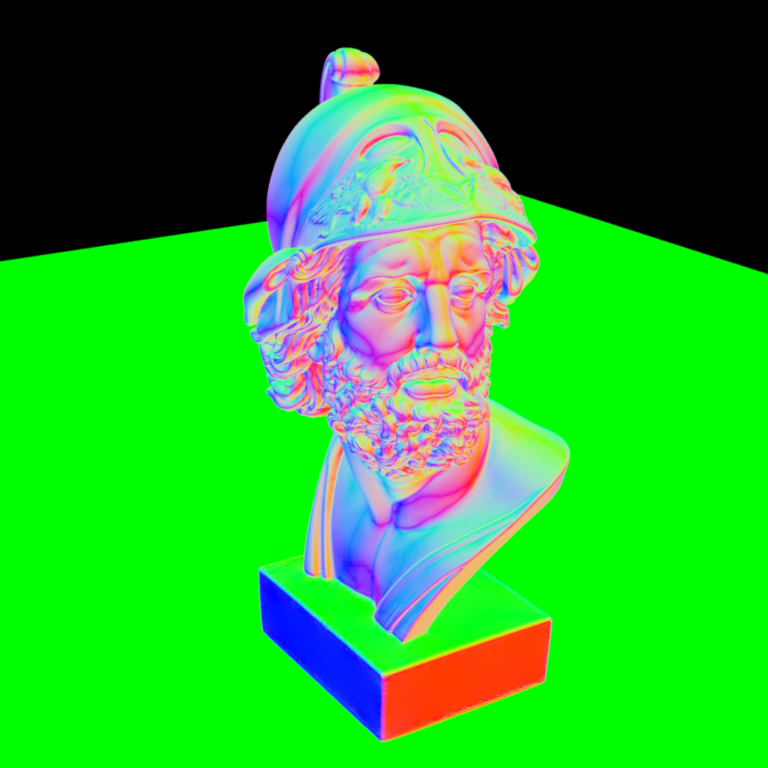
# Part 2: Average Visibility Integrator
**Time spent on this task:** 20 min
**Describe your implementation of Average Visibility Integrator.**
* In the constructor, read the property "length".
* In Li function, find the intersection point of camera ray and any surface. If there's no intersection, we return Color(1.f). Otherwise, we trace a ray of given length along the direction of world shading normal. If this ray is occuluded, then this point is not visible from the given camera ray. So we return Color(0.f). If this ray has no intersection with the surface, then the intersection point is visible from the given camera ray. We return Color(1.f);
**Average Visibility Comparison: Ajax**
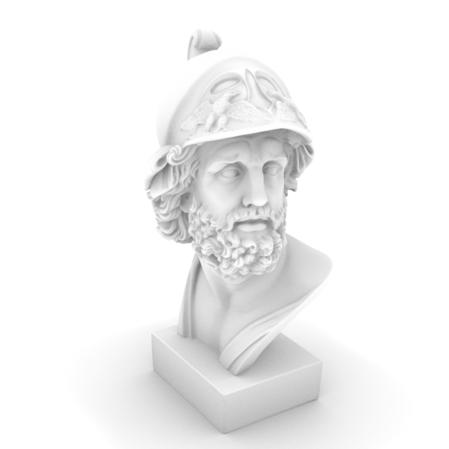
**Average Visibility Comparison: Sponza**
# Part 3: Analytic Sphere Shape
**Time spent on this task:** 60 min
**Describe your implementation of Sphere and two functions.**
* In the instructor, read the two properties.
* In rayIntersect() function, we plug in $p = o + td$ into the circle equation $(c_x - p_x)^2 + (c_y - p_y)^2 + (c_z - p_z)^2 = r^2$ and get a quadratic equation in terms of $t$. By solving the equation, we get roots $t_1, t_2$ of the equation. We set $t$ to be the smallest positive real root.
* In SetHitInformation() function, we plug in $t$ into $p = o +td$ to obtain the intersection point. The shading normal and the geometric normal are simply equal to the vector (p - c) but normalized. The uv coordinates are computed based on how spherical coordiantes are defined in the slides from lecture 2.
**Sphere Analytic vs Mesh Comparison**
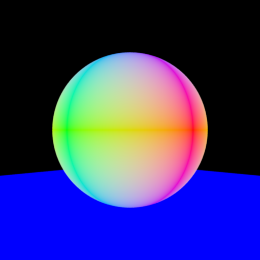
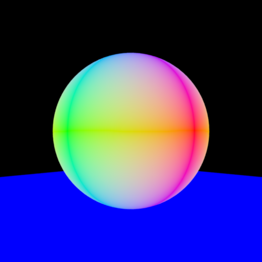
# Part 4: Direct Illumination Integrator
**Time spent on this task:** 45 min
**Describe your implementation of Direct Illumination Integrator.**
* This class has no properties.
* To compute total light intensity at the intersection point of camera ray and surface, we sum the light intensity contributed by each emitter in the scene. To compute the light intensity contributed by an emitter, we use the already implemented Diffuse BSDF and the given formula. Incidence radiance is given by the eval() function implemented in Diffuse class.
**Direct Illumination Comparison: Sponza**
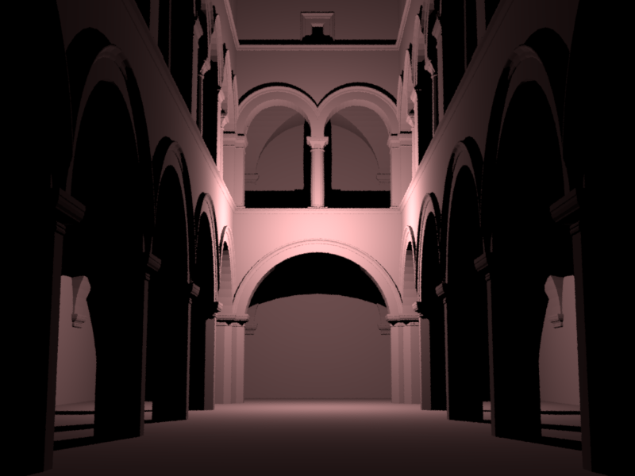
# Part 5: Texture Mapping
**Time spent on this task:** 30 min
**Describe your implementation of texture mapping.**
* The uv coordinates are divided by scale and translated by - delta. The resulting coordinates (u', v') is the coordinates of a point on a checkerboard with squares of size 1 and the square on $[0, 1] \times [0, 1]$ is of color 1. We then use knowledge of normal checkerboard pattern to computer the corresponding color.
**Checkerboard Comparison: Sphere**
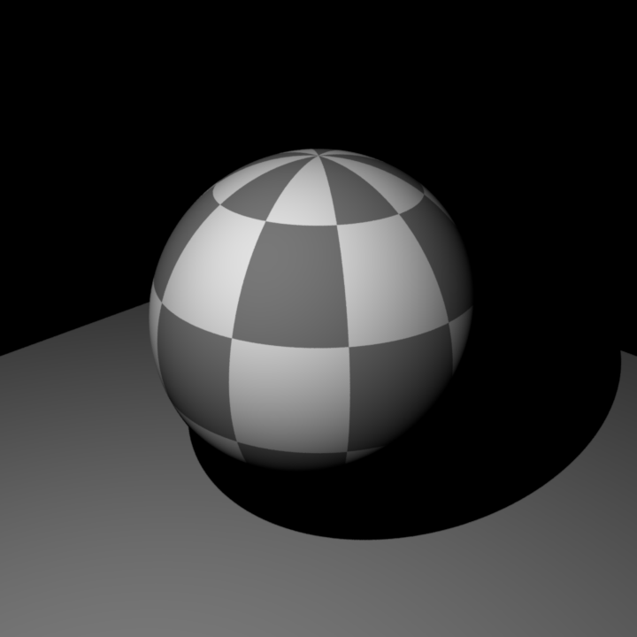
**Checkerboard Comparison: Mesh**
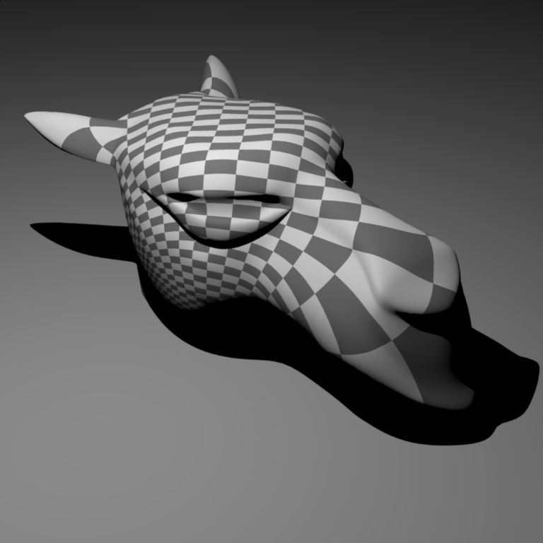
# Feedback
**Use this section to provide feedback about this assignment (each task, the handout, Nori, etc.). We appreciate your opinions to help improve future homeworks and projects.**
* The task description was very confusing. I spent a lot of time trying to figure out what is variable t and how should I access it in the second function. I think all interfaces involved, including the parameters ued in each method, should be introduced at the beginning of each question.
* In Part 5, again, it should be mentioned in the task description that the result is also dependent on sphere.cpp. Although students can figure it out by themselves, it is very time-consuming and meaningless. Also the definition of spherical coordinates should be consistent. It's better to state it clearly in the task description.
# Supplementary
* For each task, please note down the time you spent working through it and use at least a few sentences to describe your implementation. If applicable, also report the problems you encounter (e.g. whether or how it's solved, what is the difficult part).
* Please let us know to what extent your code is working (e.g. you only managed to work through part of this assignment, or your solution doesn't operate as expected in some corner cases). We encourage you to share your thinking process, and points will be granted based on your description even if the code is not 100% functioning.
* Nori generates both EXR and PNG format output. Please use PNG for image comparison in the report.
* This report template uses [Markdeep](https://casual-effects.com/markdeep/), which supports Markdown syntax in HTML file. For example usage, please refer to the [official demo document](https://casual-effects.com/markdeep/features.md.html).
* LaTeX is also supported for typing mathematical formulas:
$$
L_o(\mathbf{x}, \omega_o) = \int_{\Omega} L_i(\mathbf{x},\omega_i)\, f(\mathbf{x}, \omega_i, \omega_o)\, |\cos\theta_i|\, \mathrm{d}\omega_i
$$
 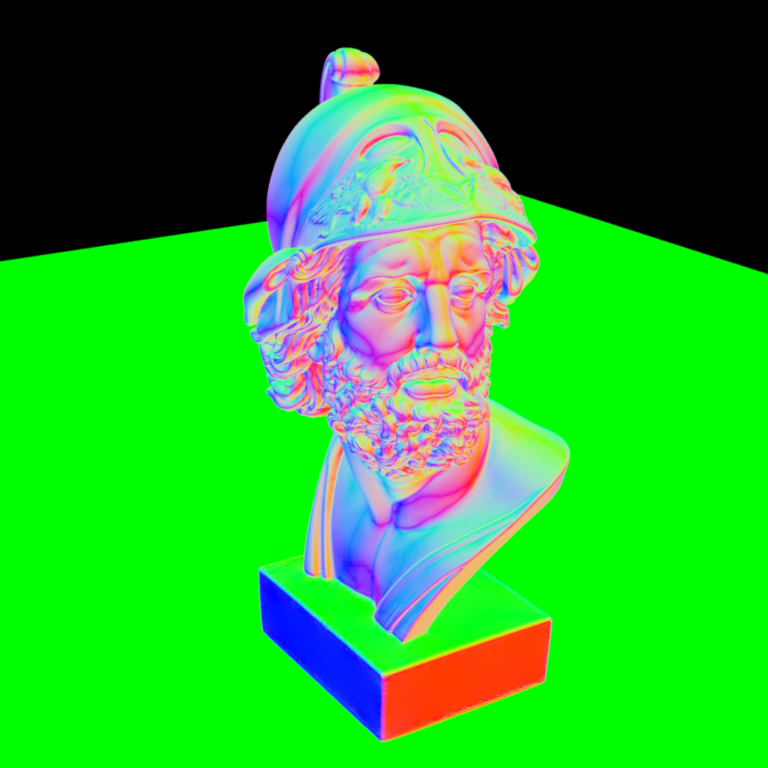
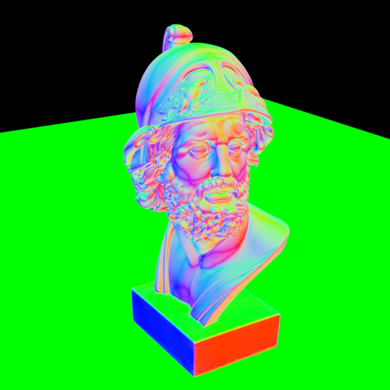

 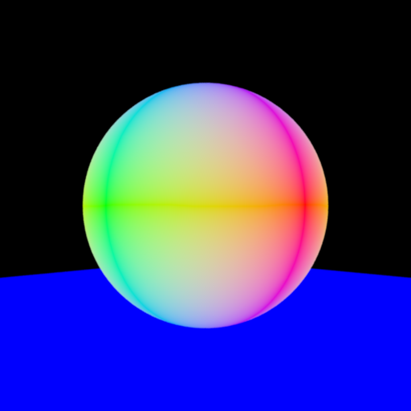
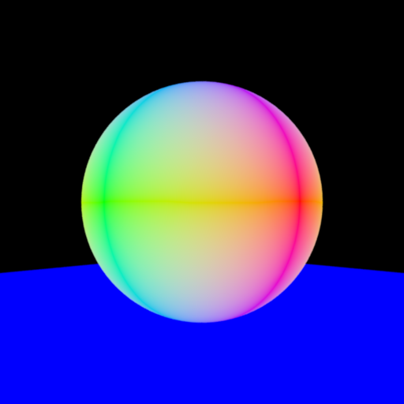
 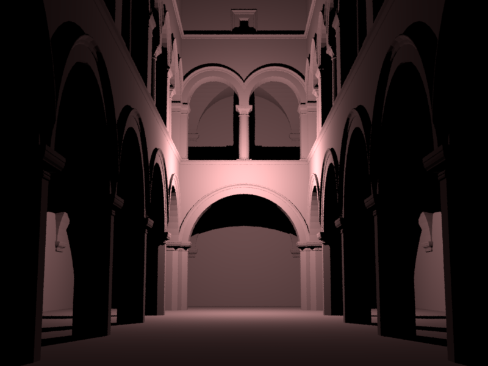
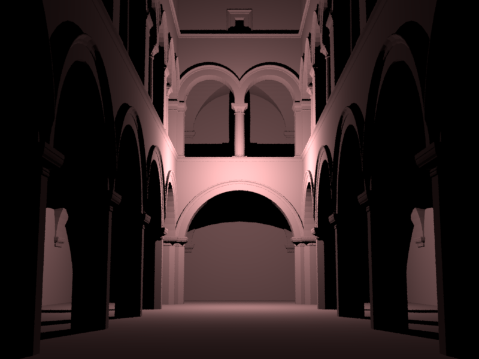